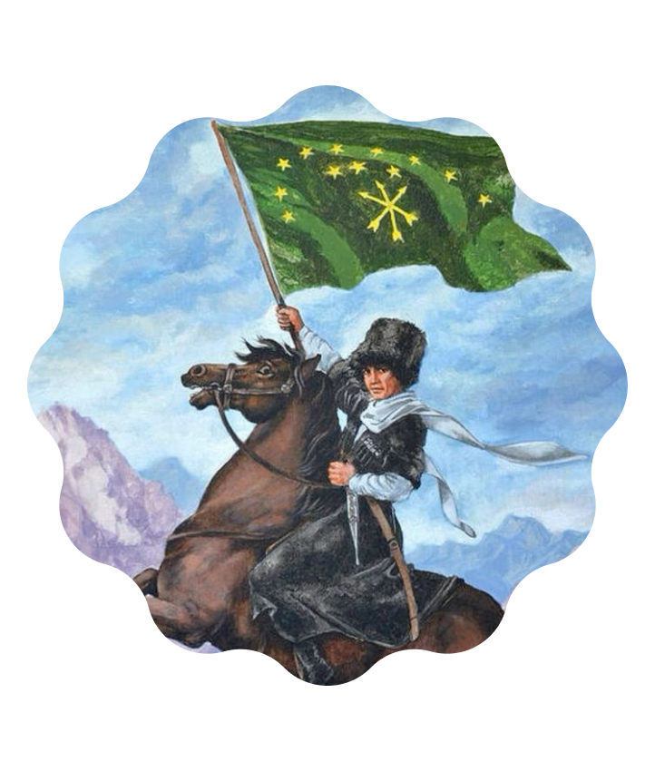

Русские
Кто это: Крупнейший восточнославянский народ, основное население России.
Язык: Русский (алфавит — кириллица).
Религия: Традиционно — православие.
Кухня: Блины, борщ, пельмени, пироги.
Символы: Матрёшка, берёза, медведь, самовар.
Известные люди: Александр Пушкин (поэт), Дмитрий Менделеев (химик), Юрий Гагарин (первый космонавт).
Черты характера: Гостеприимство, открытость, стойкость.
Сведения о национальном составе учащихся МАОУ Гимназии №82

Черкесы
Кто это: Один из древнейших коренных народов Кавказа с богатой воинской историей.
Язык: Кабардино-черкесский (письменность на кириллице).
Религия: Ислам суннитского толка.
Кухня: Лягур (вяленое мясо), пастэ (крутая пшенная каша), гедлибже (курица в сметанном соусе).
Символы: Черкеска с газырями (воинский костюм), кавказская кинжал, адыгский флаг (12 звезд и 3 стрелы).
Этикет: «Адыгэ Хабзэ» — строгий кодекс поведения, в котором высшими ценностями являются честь, мужское достоинство и почтение к женщине.
Известные люди: Темрюк Идаров (князь), Юрий Темирканов (дирижер), Мухамед Тхагалегов.


Армяне
Кто это: Древний народ Армянского нагорья.
Язык: Армянский (уникальный алфавит с 405 г.).
Религия: Христианство (первое в мире государство, принявшее его в 301 г.).
Кухня: Лаваш, долма, хоровац (шашлык), аришта.
Символы: Гора Арарат, гранат, дудук, хачкары (каменные кресты).
Известные люди: И. Айвазовский, Ш. Азнавур, А. Хачатурян.
Главные ценности: Семья, образование, гостеприимство.


Греки
Кто это: Один из древнейших народов Европы, создатели античной цивилизации.
Язык: Греческий (уникальный алфавит, ставший основой для кириллицы и латыни).
Религия: Православие (Греческая православная церковь).
Кухня: Оливки, сыр фета, греческий салат, мусака, морепродукты.
Символы: Парфенон, оливковая ветвь, театральные маски, орнамент меандр.
Известные люди: Гомер, Архимед, Александр Македонский, Эль Греко.
Главный вклад: Родина демократии, философии, Олимпийских игр и театра.